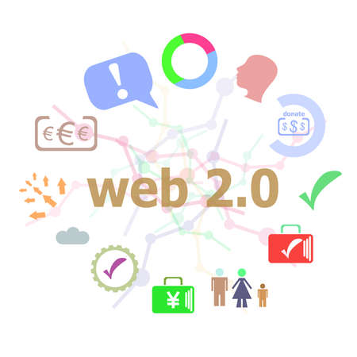

The earliest version of the internet, where users were passive consumers. Websites were static and built with basic HTML.
The era of interaction and social media. Users started creating content (blogs, comments, videos) and sharing it on platforms like Facebook and YouTube.

Focuses on making machines understand data like humans do. It uses AI, blockchain, and decentralization to provide more personalized and secure experiences.
The future of the web where humans and machines interact in a seamless, real-time relationship (Intelligence of Things).